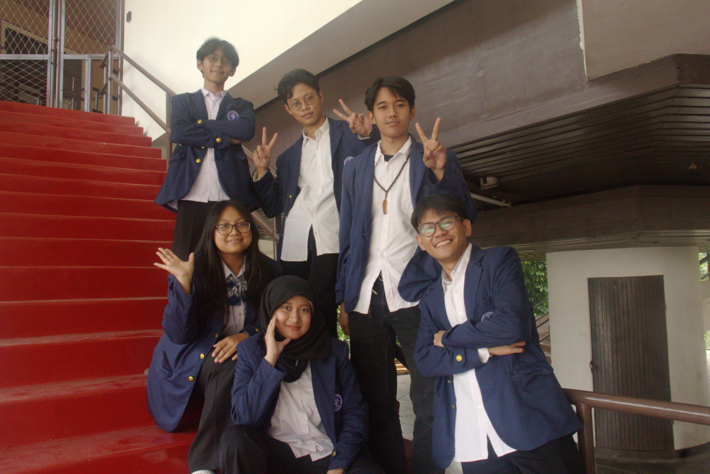
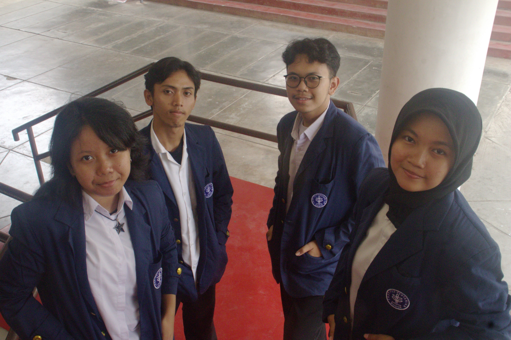
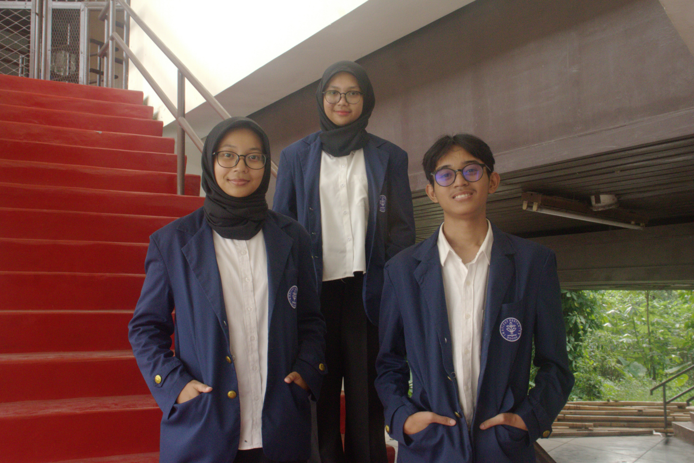
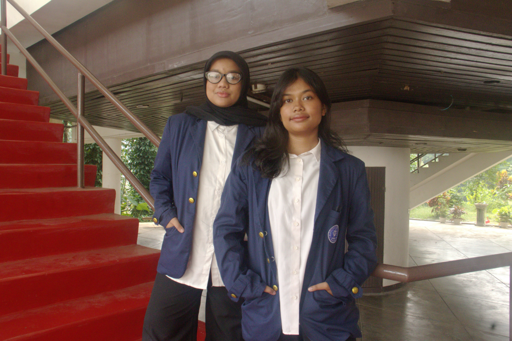

Berangkat dari semangat tersebut, Tim ALBATROSS hadir sebagai bagian dari MIT+R IPB University untuk mengembangkan teknologi pemantauan perairan dan ekosistem pesisir. Melalui pemantauan kondisi perairan dan sedimentasi, kami berupaya mendukung pemahaman lingkungan serta mendorong inovasi yang berkelanjutan.